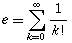

-
Describe the five hardware
abstractions mentioned in the text. [5]
| _Input__________ |
_Storage__________ |
_Processing__________ |
_Control__________ |
_Output__________ |
-
Name the five steps to top-down
problem solving as described in the text.
(It's okay if you can't remember the exact wording;
the concepts are more important.)
[5]
| _Write__________ |
_Apprehend__________ |
_Design__________ |
_Execute__________ |
_Scrutinize__________ |
-
The following code is intended to print (x,y) pairs for the function
y=x2 between x=0 and x=10, in increments of 0.1.
(It could be used to plot the function).
What is wrong with the loop?
What will happen if we run it as-is?
How would you fix it?
[4]
x = 0.0
while x != 10.0:
y = x*x
print "(%4.1f, %6.2f)" % (x, y)
x += 0.1
Due to inaccuracies in computer floating-point arithmetic, x will
not equal 10.0 exactly, so the loop will continue past 10.0 forever
(infinite loop). One quick fix is to change x != 10.0 to
x <= 10.0.
-
Name two operations/functions/properties that Python lists have that
M2/C arrays do not. [4]
- concatenation (+) (appending two lists),
- repetition (*) (e.g., "Hi" * 3 == "HiHiHi"),
- slice (extracting a sublist),
- insert/delete
-
What is a backtrace? [3]
Shows the call stack: list of what functions are currently being evaluated
-
Write "yes" or "no" next to each of the following six strings to indicate
whether it can be used as a valid name for a user-defined Python variable.
[6]
| true | yes______ |
MODULE | yes______ |
return | no (reserved)______ |
| 10thAnniversary | no (starts with digit)______ |
www.twu.ca | no (punctuation)______ |
_____ | yes______ |
(the last string is all underscores)
-
Use the Python range() function to create this list:
[ 11, 8, 5, 2 ]. [3]
range(11,-1,-3)
-
Evaluate each of the following Python expressions
exactly as given,
or if it produces an error, describe the error.
Assume each expression is independent of the others.
Assume all necessary imports have been done.
For all expressions, assume the following initialization:[12]
myApple = "Braeburn"
- 2.0 + 14 / 4 5.0
- 2 + 3>4 and (5/0 < 1) ZeroDivisionError
- "%03d%s" % (27.95, 'apples') '027apples'
- "%05.2f" % 3.1415926 '03.14'
- len(myApple) = 7 SyntaxError: can't assign
- range(len(myApple)) [0, 1, 2, 3, 4, 5, 6, 7]
- string.upper(myApple[1]) 'R'
- myApple[2:5] 'aeb'
- myApple < "Brayburn" True
- ord('z') - ord('w') 3
- 'z' - 'w' TypeError: can't subtract string
- 'z' + 'w' 'zw'
-
The transcendental number e, the base of the natural logarithm,
is approximately 2.718281828459045... and can be written as the infinite
sum:

where k! is k-factorial, or k(k-1)(k-2)....(3)(2)(1).
Write a Python function e_sum() to calculate the partial sum.
A parameter should be used to tell the function the maximum value of k
to use in the sum. For example, e_sum(3) should add terms up to
and including k==3.
[8]
Docstrings and comments are not required on this
exam, however if your code is incorrect, your comments may earn you partial
credit if they show good design thinking. Little partial credit will be
given for uncommented incorrect code.
See separate Python file e_sum.py.